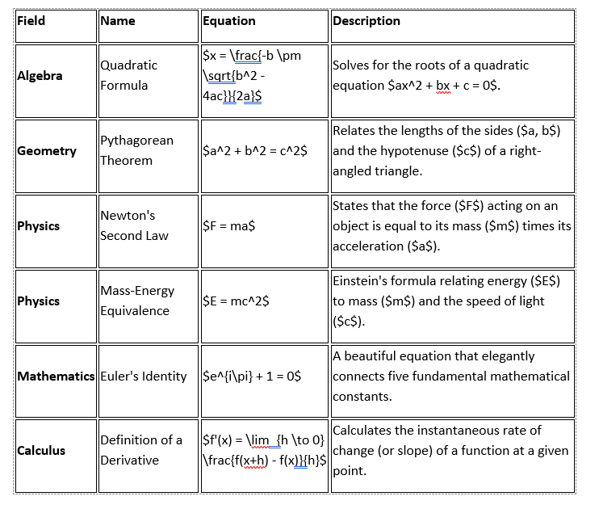
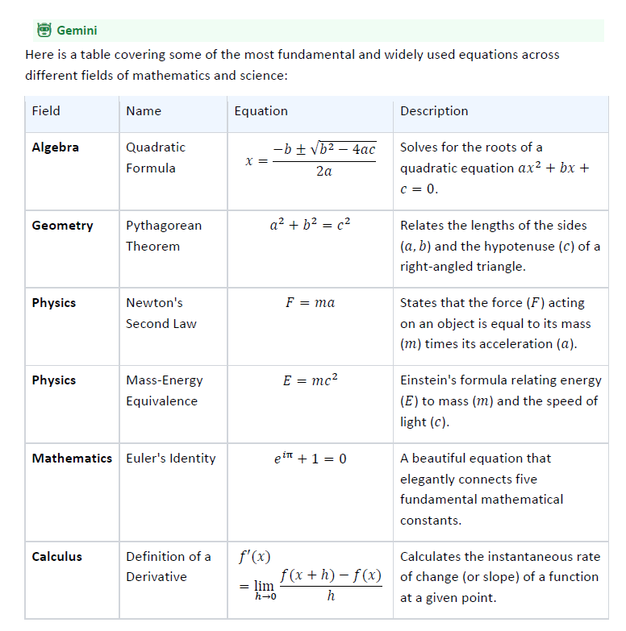

Stop copying and pasting. Instantly save your ChatGPT, Gemini, Copilot, Grok, DeepSeek, and Genspark conversations into perfectly formatted Microsoft Word and PDF documents.
Can you write a comprehensive marketing strategy for a SaaS product?
Here's a comprehensive marketing strategy for your SaaS product:
Offer a freemium tier with core features to drive user acquisition...
Publish SEO-optimized blog posts, case studies, and whitepapers...
Exported Successfully!
marketing_strategy.docx
Whether you use ChatGPT, Gemini, Copilot, Grok, DeepSeek, or Genspark — export your conversations seamlessly.
Export ChatGPT to Word or PDF with one click. Perfect formatting every time.
Save Gemini conversations to Word or PDF. Supports all Gemini formats.
Export Copilot chats to Word or PDF. Preserve all Microsoft formatting.
Instantly export Grok conversations to Word and PDF formats.
Export DeepSeek chats to Word or PDF with full formatting intact.
Export Genspark conversations to Word or PDF with perfect formatting.
Export any AI conversation in three simple steps. No technical skills required.
Navigate to ChatGPT, Gemini, Copilot, Grok, DeepSeek, or Genspark and open the conversation you want to export.
Click the AI Chat to Word icon in your Chrome toolbar. The extension automatically detects your chat content.
Choose Word (.docx) or PDF format and download your perfectly formatted document instantly.
Other exporters break your math equations and scramble your tables. AI Chat to Word keeps every formula, fraction, and cell intact.

LaTeX code exposed, tables broken, math unreadable

Equations, fractions, tables, and symbols — all perfectly formatted
LaTeX, fractions, integrals, and complex formulas render perfectly in Word and PDF.
Structured tables with headers, merged cells, and styling are preserved exactly.
Syntax-highlighted code snippets maintain their structure and readability in exports.
Built for professionals who need clean, formatted exports from their AI conversations.
Download your chats as fully editable Microsoft Word documents (.docx). Perfect for reports, documentation, and sharing with your team.
Generate polished PDF documents from any AI chat. Ideal for sharing, archiving, or presenting AI-generated content professionally.
Preserves headings, lists, code blocks, tables, bold, italics, and links. Your exported document looks exactly like your chat.
No copy-paste, no manual formatting. Just click the extension icon and your document is ready in seconds.
Works with ChatGPT, Gemini, Copilot, Grok, DeepSeek, and Genspark. One extension for all your favorite AI assistants.
Your data stays on your device. We never store, transmit, or access your chat content. 100% private and secure.
Everything you need to know about exporting your AI chats.
Other AI export extensions charge $10–$20 per month. We believe powerful tools should be accessible to everyone.
Just $4.08/month — save $34.88/year!
Join thousands of professionals who save hours every week by instantly exporting their ChatGPT, Gemini, Copilot, Grok, DeepSeek, and Genspark conversations.
Add to Chrome — $6.99/mo